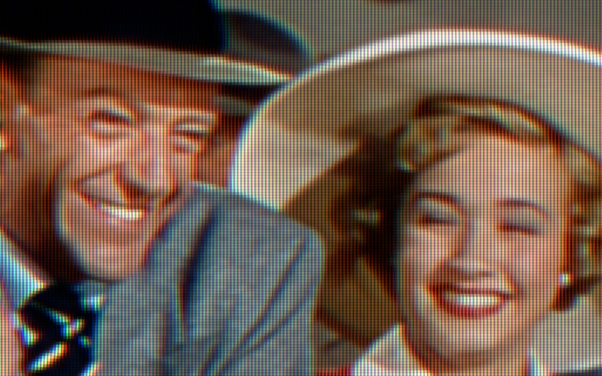
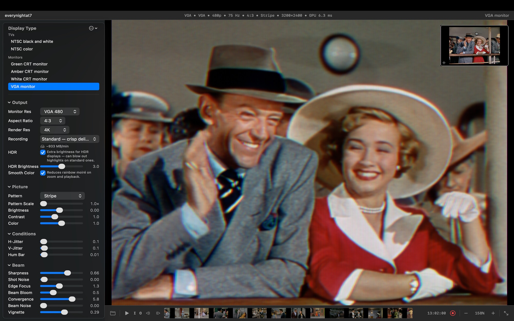
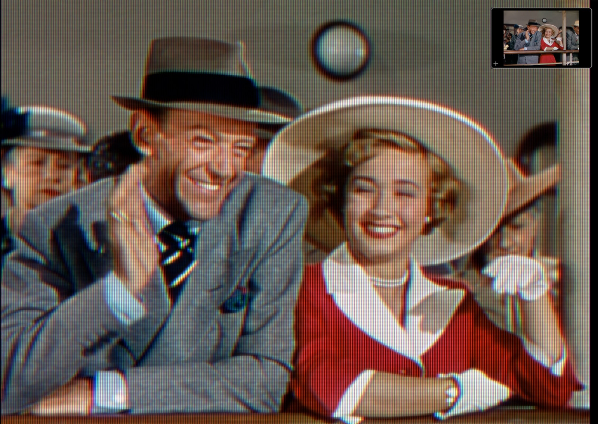
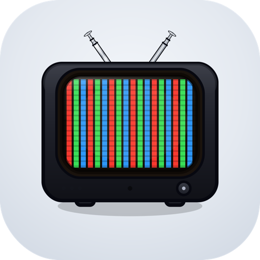

For macOS · Apple silicon · Free download
A real CRT,
simulated all the way down.
Phosphors CRT gives music videos, game trailers, ads and title sequences the genuine look of a cathode-ray tube. Not a scanline overlay: a simulated electron beam, real phosphor decay, and real shadow-mask geometry, applied to your footage in real time and recorded straight to ProRes or H.264.

Lean in: the picture is built from individual RGB phosphor stripes, not painted over with a texture.

Phosphors CRT on the VGA monitor preset, 4K render, stripe mask, 158% viewing zoom.
A simulation, not a filter
Most "CRT looks" draw scanlines on top of your video.
Phosphors fires a beam at a screen and shows you what lights up.
The scanlines, the bloom, the motion trails, the rolling hum bar, the fine mask texture: none of them are painted on. They emerge from two physical processes running on the GPU, the same way they emerged from the glass in 1985.
01 · The beam
A Gaussian spot, not a line
One electron beam sweeps the screen left to right, top to bottom, with a bell-curve cross-section and a per-scanline arrival time. Focus, convergence, edge softening and bloom are properties of that beam, so they interact the way real ones do.
02 · The phosphor
Real compounds, real decay
Where the beam lands, phosphor glows and then fades on a two-component curve taken from documented phosphor data: P22 colour TV, P4 black-and-white, long-persistence P39 green, P31, amber P3. Each colour channel decays at its own rate, so moving edges tint like a real tube's.
03 · The mask
Three real geometries
Aperture grille stripes like a Trinitron, delta-triad shadow-mask dots, and the slot mask in between. Or Triode: the three guns' picture with no mask at all. The pattern is drawn as fine as the pixel grid can hold, and it resolves further the more resolution you give it.
What you get
Set up a tube. The picture follows.
Because the artifacts come from one coherent simulation, you never fight a stack of independent sliders. A bright area blooms, which fattens its scanlines, which changes how the mask reads, which the phosphor then trails.
Six period-accurate CRTs
NTSC colour and black-and-white televisions, a multi-sync VGA monitor from CGA 200 lines to SXGA 1024, and green, amber and paper-white monochrome terminals. Each one switches the whole pipeline, not just a colour tint.
RF, Composite, S-Video, Component
Pick how the picture reaches the tube. RF brings tuner snow and narrow bandwidth. Composite combs luma from chroma with dot crawl. S-Video drops the cross-colour. Component is clean 480p. Retro Console is 240p over RF, with the thin-beam scanline gaps consoles were famous for.
Grille, slot, shadow mask, or none
Pattern Scale sets how large the lattice is, from the finest the picture can hold up to 3×. Pattern Focus sets how tightly each cell is drawn and how much black sits between them. Both work on the live picture and in recordings.
The naked eye, or a camera filming a CRT
At 1.00 you are the rested eye and everything fuses into a steady picture. Lower it and you watch through an ever-faster camera shutter: the rolling bright band and flicker of filmed CRT footage appear.
Make it look tired
Every preset starts healthy. Then push the H-Hold until the picture tears, let the V-Hold slip so it rolls, add mains hum bars, jitter, tuner sparkle, and a detuned channel on RF.
The TV speaker, too
On broadcast presets your audio runs through a full FM receiver chain: pre-emphasis, phase noise, MTS stereo with dbx companding, a small-speaker model and intercarrier buzz. The stereo image narrows to mono as the signal fades, because that is what the chain does.
Every dial
Under the glass
Your clip takes the same trip a broadcast did.
The engine simulates the chain from source to screen. The phosphor buffer on the GPU is the tube; your Mac's display is just a window onto it. That is why the look stays correct from 480p to 4K instead of breaking down like a fixed overlay.
| Display type | Lines · Refresh | Phosphor | Character |
|---|---|---|---|
| NTSC color | 480i · 59.94 Hz | P22 colour | Trinitron-style home TV. Punchy colour, moderate bloom, aperture grille. RF, Composite, S-Video, Component and Retro Console inputs. |
| NTSC black and white | 480i · 59.94 Hz | P4 white | 13-inch portable over RF. Soft focus, dreamy halation, significant bloom. |
| VGA monitor | 200 to 1024 · 75 Hz | P22 colour | Sony GDM-style multi-sync. Precise sharp beam, minimal artifacts, transparent. |
| Green CRT monitor | 350 · 50 Hz | P39 long persistence | IBM MDA look. Extremely sharp text, minimal bloom, and a trail that lingers for seconds. |
| Amber CRT monitor | 350 · 70 Hz | P3 amber | Warm terminal phosphor, medium persistence. |
| B&W CRT monitor | 350 · 75 Hz | P4 white | Paper-white terminal. Sharp text, short persistence. |
Record for delivery
A master you can hand straight to the edit.
Phosphors records the CRT picture in real time from the transport bar. Render Res is the file's pixel size, so 1080p means 1920×1080 and 4K means 4K. Nothing rescales it on the way out.
- ProRes 4444 masters at full 4:4:4 colour, so the phosphor pattern survives a deep zoom-in and a heavy grade.
- H.264 and HEVC delivery in .mp4 for the web, game assets, and anywhere else.
- HDR in HLG (Rec. 2020). Phosphor peaks rise into the display's headroom the way a tube's beam-current budget allowed. Looks right on HDR screens and degrades gracefully on SDR ones.
- Recording Preview swaps the live view for the actual recording surface at 1:1, so you judge the file, not an approximation.
- In and Out markers to record a sub-range. Markers are saved with the project.

| Tier | Codec · File | Colour | Best for |
|---|---|---|---|
| Web | H.264 (SDR) / HEVC (HDR) · .mp4 | 4:2:0 | Smallest files. Plays anywhere, embeds in web pages and game assets. |
| Standard | H.264 (SDR) / HEVC (HDR) · .mp4 | 4:2:0, higher bitrate | Crisp delivery. The default. |
| Pro | ProRes 4444 · .mov | 4:4:4, full | Editing masters where the phosphor pattern must survive a deep zoom-in. |
The round trip
Pricing
Free to try. One purchase to master.
The full effect is visible at any resolution in the live preview, for free. Pro is a one-time in-app purchase that unlocks recording.
Free
Download and start today.
- Every display type, every signal path, every dial
- Full-quality live preview at any render resolution
- Projects and custom presets
- Recording at 480p with the Triode pattern
Phosphors Pro
Unlocked inside the app through the App Store.
- Record at every resolution up to 4K
- All phosphor patterns in recordings: grille, slot, shadow mask
- ProRes 4444 mastering
- HDR (HLG) output
Requires macOS 15.6 or later on an Apple silicon Mac. 8 GB of memory minimum, 16 GB recommended for 4K.
Questions
Before you download
Is this just another scanline shader?
No. There is no scanline pass and no glow pass. The engine keeps a GPU buffer that represents the brightness of every phosphor on a simulated tube, drives a Gaussian electron beam across it at the CRT's own refresh rate, and decays each phosphor on measured curves. Scanlines, bloom and trails are what that buffer looks like. The full explanation is here.
Why can't I see the phosphor pattern at 1×?
Because you couldn't on a real tube either. A 21-inch Trinitron packs about 1,700 RGB triads across its width; you had to be inches from the glass to see them. At 1× Phosphors draws the pattern as fine as the picture allows, which on most panels below 5K is finer than the eye resolves. Raise Pattern Scale, or use the viewing zoom, to lean in.
What does the free version limit?
Only recording. You see the full effect at any resolution in the live preview. Free recordings are 480p with the Triode pattern. Pro unlocks all resolutions, all patterns, ProRes 4444 and HDR.
Does it phone home?
It can't. Phosphors CRT has no network entitlement at all, no analytics and no account. Your clips and recordings never leave your Mac. The App Store privacy label reads "Data Not Collected." Privacy policy.
Can I animate settings over a shot, or batch a folder?
Not yet. Phosphors applies one configuration per take and works one clip at a time. For an effect that changes mid-shot, record two masters with different settings and cross-dissolve in your editor.
Which Macs does it run on?
Any Apple silicon Mac (M1 or later) running macOS 15.6 or newer. The simulation is Metal-accelerated and fully sandboxed.

Give your footage a tube.
Free on the Mac App Store. Apple silicon, Metal-accelerated, no account required.